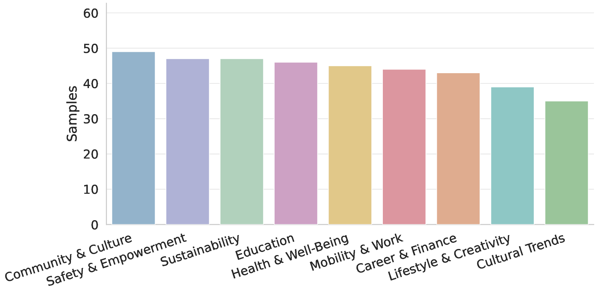
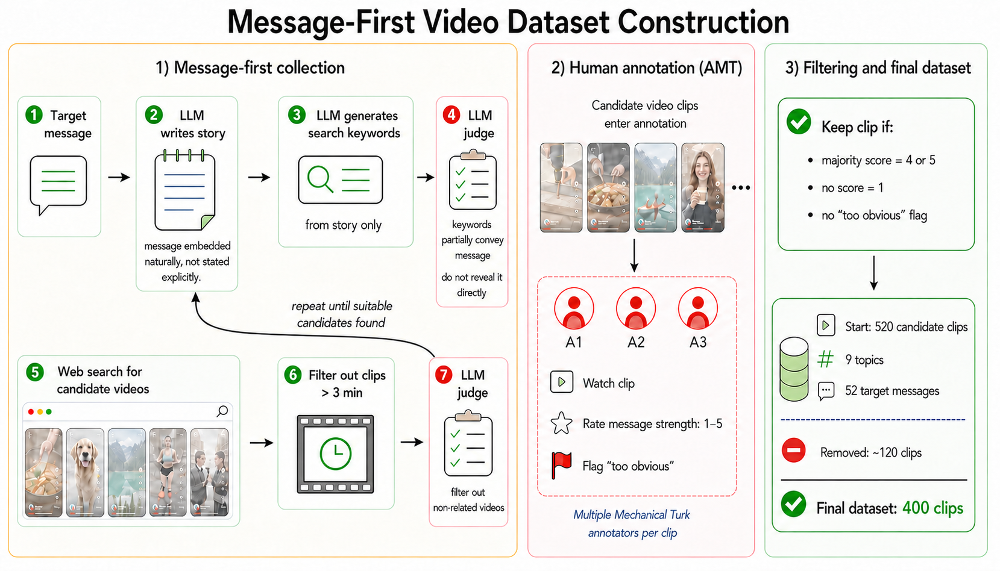
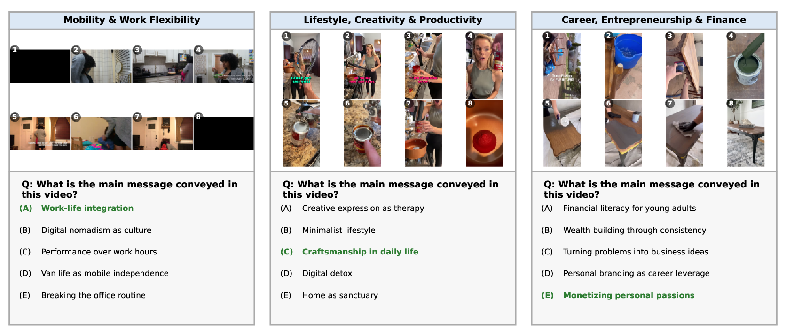

Abstract
Understanding short online videos involves more than identifying visible objects and actions; video makers often include an underlying message or purpose in the clip. We introduce VidMsg, a benchmark for evaluating implicit message understanding in short, internet-native video clips. VidMsg contains 400 YouTube-derived clips across 9 practical topic areas and 52 fine-grained target messages, covering domains such as career and finance, education, health and well-being, culture, safety, sustainability, and lifestyle.
VidMsg is constructed through a message-first pipeline: an LLM first translates target messages into indirect search scenarios, which are used to retrieve candidate clips. Human annotators then retain clips that convey the intended message without being overly explicit. VidMsg is designed primarily for bidirectional message–clip retrieval for scalable applications such as video search and recommendation, where systems must capture holistic video understanding. In addition to retrieval, VidMsg includes a diagnostic multiple-choice QA benchmark, where models select the intended message of a clip from semantically related alternatives.
Experiments with contemporary video-language and retrieval models show that strong models often fail on VidMsg, because the task requires pragmatic inference, integration of contextual cues, and discrimination among semantically close messages. We also introduce VidVec-Msg, a baseline method that improves message-oriented retrieval while leaving substantial headroom for future work.
Dataset Overview
VidMsg covers nine recurring communicative domains: career & finance, community & culture, cultural trends, education, health & well-being, lifestyle & creativity, mobility & work, safety & empowerment, and sustainability. These topics were selected because clips in such domains often convey abstract advice, values, emotions, social meanings, or implicit viewpoints rather than merely documenting visible events.
The dataset is relatively balanced across topics: the number of clips per topic ranges from 35 to 49. Across 52 target messages, each message is represented by 5 to 9 clips, with most messages having 8 or 9 clips. This structure supports both broad topic coverage and fine-grained message-level evaluation.
Importantly, within each topic the benchmark includes semantically related but distinct messages—such as “food as self-care” versus “lifestyle medicine beyond symptom relief,” or “work-life integration” versus “performance over work hours.” Models must therefore distinguish fine-grained communicative meanings rather than simply identify the general domain.

Message-First Data Collection
Constructing a benchmark for implicit message understanding is challenging because standard web search is optimized for explicit objects, events, and keywords. Directly searching for a target message often retrieves clips where the message is stated verbatim in the title, speech, or text overlay. To address this, we adopt a message-first collection pipeline.

The process starts with a target message. An LLM is prompted to generate short, story-like scenarios that naturally incorporate the target message into the narrative without stating it directly. A second LLM generates indirect search keywords from these stories, and a separate LLM judge verifies that the keywords remain related to the original message without direct lexical disclosure. The resulting keywords are used to retrieve candidate public clips, which are filtered to three minutes or less.
Candidate clips are validated through human annotation on Amazon Mechanical Turk. Each clip is assigned to three independent annotators, who rate on a five-point scale how strongly it conveys the target message, and flag clips where the message is too explicit. A clip is retained only if a majority of annotators assign a high score (4 or 5), no annotator assigns a score of 1, and no annotator marks the clip as “too obvious.”
Annotation Agreement
We evaluate inter-rater reliability using average pairwise linear-weighted κ among the three annotators assigned to each clip. Agreement is substantial across all annotated clips (κ = 0.681), and higher among the 400 retained clips (κ = 0.795), as expected given the conservative filtering. These results indicate that annotators generally agree on whether a clip conveys the target message, while some variation reflects the inherent nuance of implicit message understanding.
Evaluation Protocols
Bidirectional Retrieval
The primary evaluation protocol. In text-to-video retrieval, each of the 52 target messages is used as a query against all 400 clips. In video-to-text retrieval, each clip is used to retrieve the corresponding target message from the 52 candidates. This setting reflects scalable applications such as search, recommendation, and content analysis. We report Recall@10 and mAP for text-to-video, and Recall@1 and mAP for video-to-text.
☑ Multiple-Choice QA
A diagnostic analysis protocol. For each clip, the model selects the main message from 5 candidate messages sampled from the same topic. The same-topic design makes the task more challenging than coarse topic classification, since distractors are semantically related to the correct message. This setting evaluates MLLMs in their native instruction-following mode, exposing gaps in direct message reasoning.

Results
Retrieval Results
VidMsg is challenging for standard retrieval models, especially those trained for caption-like video–text alignment. Among off-the-shelf baselines, Qwen3-VL-Emb performs best, reaching 39.7 R@10 and 36.1 mAP (T2V) without transcripts. Our baseline, VidVec-Msg, outperforms all baselines, achieving 47.5 R@10 and 45.6 mAP (T2V) and 48.9 R@1 and 63.2 mAP (V2T) without transcripts, with further gains when transcripts are provided.
| Method | Text-to-Video | Video-to-Text | ||||||
|---|---|---|---|---|---|---|---|---|
| w/o transcripts | w/ transcripts | w/o transcripts | w/ transcripts | |||||
| R@10 | mAP | R@10 | mAP | R@1 | mAP | R@1 | mAP | |
| Clip4Clip | 21.8 | 19.3 | — | — | 24.1 | 37.3 | — | — |
| ImageBind | 24.6 | 23.6 | — | — | 20.0 | 34.8 | — | — |
| PE-Core | 10.3 | 10.0 | — | — | 8.1 | 16.8 | — | — |
| InternVideo2-1B | 19.5 | 17.4 | — | — | 17.7 | 29.4 | — | — |
| InternVideo2-6B | 25.5 | 22.6 | — | — | 23.0 | 36.1 | — | — |
| VideoPrism | 28.4 | 24.8 | — | — | 29.9 | 42.8 | — | — |
| VLM2Vec-2.0 | 29.0 | 27.6 | 32.3 | 31.0 | 27.9 | 43.6 | 34.4 | 49.2 |
| Qwen3-VL-Emb | 39.7 | 36.1 | 42.7 | 42.8 | 45.8 | 50.6 | 50.6 | 63.1 |
| VidVec | 28.4 | 25.3 | 32.1 | 28.6 | 36.0 | 51.0 | 39.8 | 54.5 |
| VidVec-Msg (Ours) | 47.5 | 45.6 | 48.9 | 46.7 | 48.9 | 63.2 | 49.1 | 65.0 |
VidMsg retrieval performance. Recall@10 and mAP for Text-to-Video; Recall@1 and mAP for Video-to-Text; with and without ASR transcripts. Bold indicates best result per column.
Multiple-Choice QA Results
Among open-source models, Qwen2.5-VL-7B achieves the best overall accuracy at 71.9%, outperforming larger variants such as Qwen2.5-VL-32B (67.6%) and Qwen3-VL-32B (68.9%). Commercial models obtain the strongest results: Gemini-3-Flash and Gemini-3.1-Pro both reach 76.5%. Several models perform near the 20% random-choice baseline, confirming that VidMsg-QA is a genuinely challenging diagnostic.
| Model | Car. | Comm. | Cult. | Edu. | Hlth. | Life. | Mob. | Safe. | Sust. | Overall |
|---|---|---|---|---|---|---|---|---|---|---|
| Commercial Large Multimodal Models | ||||||||||
| GPT-5.4-Mini | 46.5 | 73.5 | 60.0 | 65.2 | 73.3 | 71.8 | 65.9 | 76.6 | 97.9 | 70.6 |
| GPT-5.4 | 55.8 | 71.4 | 54.3 | 67.4 | 75.6 | 69.2 | 65.9 | 72.3 | 95.7 | 70.4 |
| Gemini-3-Flash | 67.4 | 75.5 | 65.7 | 73.9 | 73.3 | 74.4 | 81.8 | 76.6 | 95.7 | 76.5 |
| Gemini-3.1-Pro | 65.1 | 67.3 | 65.7 | 80.4 | 75.6 | 71.8 | 84.1 | 78.7 | 95.7 | 76.5 |
| Open-Source Vision-Language Models | ||||||||||
| Qwen3-VL-2B | 41.9 | 67.3 | 65.7 | 54.4 | 57.8 | 61.5 | 65.9 | 66.0 | 95.7 | 64.3 |
| VideoLLaMA3-7B | 27.9 | 40.8 | 31.4 | 39.1 | 33.3 | 46.1 | 31.8 | 48.9 | 61.7 | 40.5 |
| Qwen2.5-VL-7B | 55.8 | 77.5 | 68.6 | 63.0 | 68.9 | 69.2 | 79.5 | 70.2 | 91.5 | 71.9 |
| MiniCPM-V-4.5-8B | 20.9 | 22.4 | 28.6 | 17.4 | 22.2 | 25.6 | 20.4 | 23.4 | 21.3 | 22.3 |
| Molmo2-8B | 44.2 | 55.1 | 40.0 | 56.5 | 48.9 | 61.5 | 45.5 | 72.3 | 89.4 | 57.7 |
| NVILA-8B | 41.9 | 55.1 | 57.1 | 45.6 | 48.9 | 46.1 | 40.9 | 66.0 | 78.7 | 53.7 |
| LLaVA-1.5-13B | 46.5 | 57.1 | 60.0 | 47.8 | 46.7 | 59.0 | 50.0 | 48.9 | 80.8 | 55.2 |
| Qwen3-VL-8B | 53.5 | 61.2 | 60.0 | 47.8 | 64.4 | 69.2 | 61.4 | 68.1 | 95.7 | 64.8 |
| Qwen2.5-VL-32B | 46.5 | 79.6 | 48.6 | 50.0 | 77.8 | 66.7 | 65.9 | 70.2 | 95.7 | 67.6 |
| Qwen3-VL-32B | 53.5 | 75.5 | 57.1 | 58.7 | 66.7 | 76.9 | 65.9 | 63.8 | 97.9 | 68.9 |
VidMsg MCQ accuracy (%) by topic. Topics: Car. = Career & Finance, Comm. = Community & Culture, Cult. = Cultural Trends, Edu. = Education, Hlth. = Health & Well-Being, Life. = Lifestyle & Creativity, Mob. = Mobility & Work, Safe. = Safety & Empowerment, Sust. = Sustainability. Bold = best within model group per column.
Per-topic results reveal substantial variation in difficulty. Sustainability is consistently the easiest topic, with several models exceeding 95% accuracy, suggesting its messages are more visually distinctive. In contrast, topics such as career and finance, cultural trends, and lifestyle are more challenging, requiring finer pragmatic distinctions and stronger contextual interpretation.
These results complement the retrieval evaluation: VidMsg is not merely a representation-learning challenge. It also exposes gaps in direct message reasoning, especially when the correct answer must be selected among closely related alternatives.
Key Contributions
- VidMsg benchmark: A benchmark for implicit message understanding in short, real-world, internet-native video clips — 400 clips across 9 topic areas and 52 fine-grained target messages.
- Message-first pipeline: A data construction pipeline using LLM-generated storylines, indirect search, and conservative human relevance and explicitness filtering.
- Two evaluation protocols: Bidirectional message–clip retrieval (T2V and V2T) and multiple-choice QA, enabling assessment of both scalable retrieval and direct message reasoning.
- Extensive model evaluation: Retrieval results for 10 methods and MCQ results for 14 models, showing that current systems remain far from reliable on VidMsg.
- VidVec-Msg baseline: A lightweight text-only adaptation method that substantially improves message-oriented retrieval without requiring video-based training data.
BibTeX
@inproceedings{tzachor2026vidmsg,
title = {VidMsg: A Benchmark for Implicit Message Inference in Short Videos},
author = {Issar Tzachor and Michael Green and Rami Ben-Ari},
year = {2026},
}